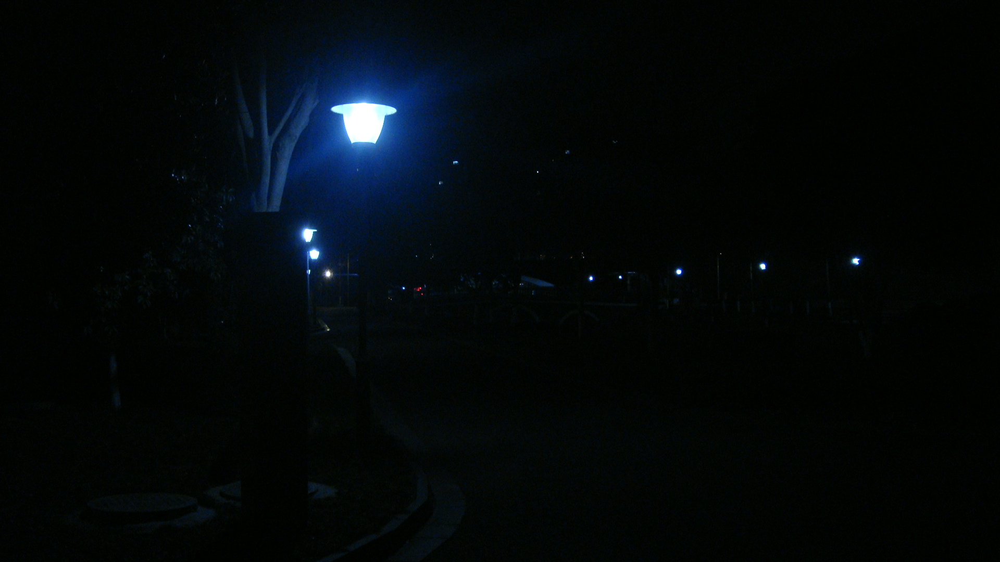

三月之一
2023.3.12
2023.3.9
于校
文学的艺术是个性的，排他的。被赋予情感的文字更有甚之。
刻意的模仿，容易使写作定于一端，就是文学的死亡。因此说，先有创作，再成派系。
我觉得自己的情感难以揣测，于是把文字背后的情感内核在文学作品里的直接体现淡化，让我的情感趋于朦胧，趋于模糊。同时尽力地写到有所深度的地方，让一部分人能体会自己心思的流动，自己心潮的澎湃。那么就可以共情，读者与作者共的不是一个情，但都有感想。
我频繁使用解构，重筑文字和词语来构造这种脱离个性的文章，处理得不好，像胡言乱语。足够模糊的意思用户写作的技巧表达得好，能使恰当的人恰当地体会深囿的真实的心意。或者说，对读者也有我自己的要求。
当一个'essayist'吧。如果有人能认出你，大家都是可以欢欣鼓舞的，并且迈开步去。
2023.3.9
take it easy，慢慢来。我对她说。
我相信你会比我走得更远。
随着灯火渐远，明早太阳升起：
我说：“慢慢来，珍重时光。”
这句话会跨越时光。我想。

我已经没有多少时间属于自己了。所以呢，所以呢，有时我想停一会，十几分钟就好。
2023.3.11
还是好感动，我莫名听到了 atri my dear moments 主题曲的的钢琴翻奏曲，
当 narrative 走向终章，您的消息崭露一角
最后一声蝉鸣，久久地在暗弱的星空里回荡。
然后呢，蝉是要死去的，它度过短暂的一生。
于是呢，夏天的风仍然刮得平常，夏天的雨仍然落得平静。
还有一片星空，久久地注视着人们。
评论